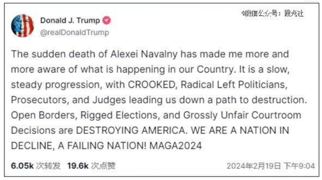
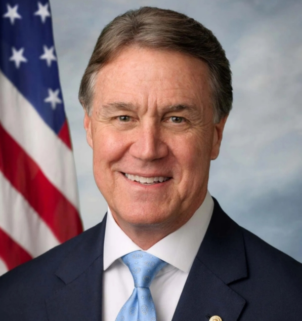

出海墨西哥的中企，被特朗普「明袭」
11月25日|来源：投资界

当地时间11月25日，特朗普在其旗下社交平台Truth Social宣称，上任*天，他会“签署所有必要文件，向墨西哥和加拿大所有进入美国的产品征收25%关税。”在另一条动态中，他宣称还要对中国商品额外征收10%关税。
选举日过去还不足一月，特朗普的关税2.0大棒已经接踵而至。尽管其在竞选过程中已经展现了对中国和墨西哥的强硬态度，但这次的宣言是他此次成为候任总统后，首次公开释放如此明确的关税征收信号。
中企出海墨西哥的大趋势或将受到影响。在中美贸易战冲突升级的背景下，墨西哥曾一度成为中国企业绕开关税门槛、触达北美市场的重要跳板，以制造业为主的中企在近年来加速了对墨西哥投资建厂的步伐。
但据行内人士透露，因特朗普将上台以及经营因素影响，目前，部分中企已经延缓了投资墨西哥的计划，转而采取观望态度。
中企在墨西哥的投资热潮，或将迎来降温时刻。
01 特朗普，围堵迂回之路
“我们不会让它们进入我们的国家，摧毁我们仅存的汽车产业，因为这是一个正在衰落的产业，就像现在这是一个正在衰落的国家一样。我们是一个正在衰落的国家。我们是一个衰落的国家。”
今年十月，特朗普发表竞选演讲，反复强调其对中企通过墨西哥进入北美市场的态度。他强调要重新谈判《美墨加三国协议》（USMCA），并且，“征收任何必要的关税——100%、200%、1000%。（以保证）它们建造的这些工厂不会向美国出售任何汽车”。
特朗普的态度已然明了。如今，他进一步宣称的关税措施，也在表明其掀翻《美墨加三国协议》的决心。
中企去往墨西哥投资建厂的热度在近年不断攀升。据《日经中文网》，大型银行BBVA墨西哥对工业园区协会的调查数据显示，到2025年，进驻墨西哥的企业中，中企预计占比20%。但2018年至2022年时，这一数据仅为6%。
数据增长背后的原因已经老生常谈。中美贸易冲突升级背景下，为了回避高涨的关税及政策风险，瞄准美国市场的中企需要将供应链向外转移，而《美墨加三国协议》规定墨西哥出口美国的产品可以免去关税，这让墨西哥顺势成为了中企出海的新坐标。
目前，中国去往墨西哥投资设厂的企业以制造业为主，包括汽车零部件、电机、家具及家居、消费电子等多种品类。其中，令特朗普最为介怀的汽车工业或将在关税调整下受到*影响。
以主机厂为例——2023年2月，特斯拉宣布计划在墨西哥蒙特雷建造新工厂，但今年7月，马斯克宣称，因美国大选结果未定，特斯拉将暂缓墨西哥工厂的建设。
被称为特朗普“*盟友”的马斯克尚且步步谨慎，中国汽车企业出海墨西哥更加举步维艰。
今年初，比亚迪透露了其墨西哥建厂计划。本月中旬，比亚迪墨西哥负责人Jorge Vallejo表示，比亚迪将很快确定首家墨西哥工厂的选址。
事情进展或许并不顺利。《华尔街日报》透露，在特朗普宣布“对墨西哥进口产品征收25%关税”后，比亚迪可能会在墨西哥遇阻，因为“比亚迪建厂可能会向特朗普及其身边的贸易鹰派人士发出错误信息，这相当于暗示墨西哥希望成为一道后门，方便中国公司向美国人销售产品。”
聚焦于汽车工业自动化领域的苏州隆士丹自动化技术有限公司(以下简称“隆士丹”)
北美市场首席代表Alan，近期正在筹建墨西哥分公司，他告诉霞光社，为主机厂供应汽车零部件的公司受关税影响较大，“因为他们主要是汽车零部件标准品，量大，涉及金额高”。但隆士丹专注于为汽车零部件制造商提供智能制造生产线。由于其产品属于非标准化定制，涉及的交易金额相较于零部件本身要小得多，因此，受到关税变动的影响相对较小。
除汽车工业之外，如果新的关税政策正式敲定，家具家居、消费电子品类中的标品也将遭受显著影响。
“很多人都对特朗普上台对墨西哥制造业的影响产生了忧虑。”锦天城律师事务所律师吕世仰告诉霞光社，他从事中国企业投资墨西哥相关的法律工作已有将近十年。“部分企业家也因此延缓墨西哥投资计划。”
然而，关税或许不是影响中企出海墨西哥的*原因。在某卫浴中企墨西哥工厂任职总监助理的祁嘉耀观察到，制造业中企在墨西哥的经营不太理想，“基本都不太赚钱”。他一共辗转过四家位于墨西哥的中企工厂，其中一家是国内制造业龙头，“仍然亏损非常严重。”背后的原因主要是管理成本太高，以及...
（此处省略了部分内容，以保持回答的简洁性）
02 关税大棒，是否会落下？
早在八年前，特朗普就开始动用关税手段。
（此处省略了部分关于特朗普过去关税政策的历史背景，以保持回答的简洁性）
这让部分行内人士对特朗普是否会兑现其关税宣言表示质疑。
（此处省略了部分关于特朗普关税政策可能受墨西哥当局行动影响的讨论，以保持回答的简洁性）
但与此前不同的是，特朗普此次对墨西哥的“关税威胁”包含了对中企绕道墨西哥建厂的不满，而墨西哥当局会迫于压力，在“中企投资”和“美国市场”中做出权衡。
（此处省略了部分关于墨西哥当局对此态度摇摆的讨论，以保持回答的简洁性）
目前来看，美墨双方还将就此持续博弈。
Alan认为，关税政策的落实仍需要长时间商议。
（此处省略了部分关于关税政策落实可能性的讨论，以保持回答的简洁性）
03 向南或向北，是中企的新路径
无论美国对墨西哥征收关税一事是否落实，考虑到美方贸易保护主义颇有升级趋势，出海墨西哥的中企仍有可能在未来持续遇到阻碍。
（此处省略了部分关于已经在墨西哥建厂企业可能面临的挑战和应对策略的讨论，以保持回答的简洁性）
此外，在制造业回流政策的导向下，特朗普似乎已经对外资赴美建厂呈现开放态度，这是否能成为中企出海的新方向？
（此处省略了部分关于特朗普对外资赴美建厂态度可能变化的讨论，以保持回答的简洁性）
Alan建议，“*，你要看美国到底会对此出台什么政策，这对我们是否有利？第二，结合人力成本、物流成本等多方面来看，我们过去建厂后，能不能得到利润？我们当然是要获利，而不是过去给人家白送钱。”
当前，特朗普权力交接尚未完成，其上台后，究竟会实行何种政策尚不可知。但可以确定的是，此次特朗普宣布对墨西哥征收关税的原因，仍与中美贸易战摩擦升级挂钩——这是特朗普用来回应中企迂回入局北美的方式。
在未来，中企仍要坚持“走出去”的策略，但中美贸易冲突将是一场持久战。中企需要多元化市场布局，通过转口贸易、将商品组装环节外迁、企业出海等方式应对“特朗普2.0时代”的冲击，并积极拓展“一带一路”等新兴市场，以便在未来应对新变量。
了解更多
国际人物:特朗普拟提名的美国驻华大使，何许人也?
12月5日|来源：环球网

中新网12月6日电(魏晨曦)“他一直是我忠实的支持者和朋友”，这是美国当选总统特朗普对其选定的下任美国驻华大使的评价。
当地时间12月5日，特朗普宣布选择戴维·珀杜(David Perdue)担任美国新任驻华大使。他还称，珀杜已接受他的提议，“非常期待与珀杜在新岗位上共事”。
美国驻华大使一职，被美媒称为“特朗普新内阁中最重要的外交职位之一”。被特朗普选中担任这一职位的戴维·珀杜，究竟何许人也？
商人出身的政治家
法新社评价称，珀杜是“国会最富有的议员之一”，也是“任职期间在股市最活跃的人之一”。
现年74岁的珀杜，出生于佐治亚州，从政之前，有着漫长的商业生涯，与许多亚洲公司有着贸易往来和商业合作，被美媒形容为“商界高管出身的政治家”。
在美国连锁折扣企业达乐公司任职期间，珀杜大力推动业务向中国拓展;转到食品日用品公司莎莉公司工作后，他以中国香港为基地，从零开始开发亚洲业务。
福克斯新闻网指出，珀杜进入政界的标志，是他在2014年以共和党人身份竞选联邦参议员。
作为一名“政治局外人”，他强调自己的商业背景，并以经济问题和减少美国联邦赤字为竞选主题，最终击败对手成功当选。
2015年至2021年，珀杜担任佐治亚州联邦参议员，任职期间，珀杜专注于经济增长、税收改革、国家安全和国际贸易相关问题。
担任联邦参议员期间，珀杜负责参议院军事委员会下属的海上力量小组委员会工作，并在参议院外交关系委员会任职。《华盛顿时报》指出，他是当时唯一同时在两个委员会任职的共和党人。
与此同时，他多次“直言不讳”地支持特朗普。2021年，珀杜竞选佐治亚州州长，彼时也得到了特朗普的支持，但未获成功。
与中国的缘分
特朗普在社交媒体发文称，珀杜将实施他本人维护地区和平的战略，并在与中国建立富有成效的工作关系方面发挥重要作用。
作为《财富》世界500强企业的首席执行官，珀杜在国际商业领域拥有40年的职业生涯，并有着参议员的从政经历。在特朗普看来，他将“带来宝贵的专业知识，帮助发展美国与中国的关系”。
珀杜曾在新加坡和中国香港居住，其职业生涯的绝大部分时光扎根于亚洲，尤其是中国，这促进了他对中国文化和当地商业环境的深入了解。
特朗普认为，珀杜在华丰富的商业经验，使其“非常适合担任美国驻华大使这一职务”。
另据彭博社报道，未来特朗普政府的提名人选，需要获得美国参议院的批准。如果新任驻华大使人选得到参议院批准，那么珀杜将会在“管理世界上最大的两个经济体美国和中国之间的关系方面发挥关键作用”。
了解更多
最新!特朗普称“美中联手可解决世界上所有问题”!他还宣布:孙正义将向美国投资1000亿美元，创造10万个就业岗位
12月16日|来源：每日经济新闻

时间12月16日，美国当选总统特朗普在佛罗里达州海湖庄园发表公开讲话。
据新华社12月17日报道，特朗普16日说，美中两国联手可以解决世界上所有问题。特朗普当天在佛罗里达州海湖庄园举行记者会时作出上述表态。“中国和美国可以一起解决世界上所有问题，你想一想，这很重要。”特朗普说。
另外，特朗普还宣布，日本软银集团将向美国投资1000亿美元。据知情人士透露，软银的此项投资将创造至少10万个就业岗位，软银计划在2029年特朗普离任前完成这项工作。软银的这一投资在特朗普正式就职前宣布，这也是特朗普首次在当选后举行新闻发布会。早在2016年特朗普赢得大选后，软银同样做出投资500亿美元的承诺。此后，软银投资了一系列新兴创业公司--其中一些发展迅速，另一些陷入困境，其中包括联合办公公司WeWork和一家名为Zume的机器人公司。不过软银手头没有1000亿美元的现金，这笔巨额投资资金预计部分来自其资产负债表，或来自与合作伙伴共同筹集的资金。
孙正义约十年前发起了软银愿景基金的计划，该基金是一个价值1000亿美元的投资基金，用于投资全球科技公司，其中有一半资金来自沙特阿拉伯。通过该基金，孙正义成为科技初创企业的最大支持者之一，投资了包括Uber和DoorDash在内的公司。
软件银行集团(SoftBank)，1981年由孙正义在日本创立，并于1994年在日本上市，是一家综合性的风险投资公司。致力于I T产业的投资，包括网络和电信行业。
特朗普再次警告哈马斯:必须在其就职前释放人质
据央视新闻，当地时间12月16日，特朗普在佛罗里达州海湖庄园的公开讲话表示，他与以色列总理本雅明·内塔尼亚胡就新一轮巴以冲突进行了会谈。特朗普表示，他已经发出警告，如果哈马斯在明年1月20日其就职总统之前未能释放人质，后果将十分糟糕。
当地时间12月2日，美国当选总统特朗普曾在其社交媒体表示，如果在2025年1月20日之前加沙地带的人质没有被释放，哈马斯将付出巨大代价。特朗普此前在社交媒体上发帖警告称，如果在其就职总统前加沙人质未被释放，关押人质的“责任人”“将付出惨痛代价”，将“受到美国历史上前所未有的严厉打击”。
此前，美国公民奥默·诺伊特拉被证实已于2023年10月7日在巴勒斯坦伊斯兰抵抗运动(哈马斯)的袭击中死亡，其遗体仍被扣押在加沙地带。美国总统拜登2日对诺伊特拉的死讯表示“震惊和愤怒”，并承诺他将不遗余力地让被扣押人员回归家园。
了解更多